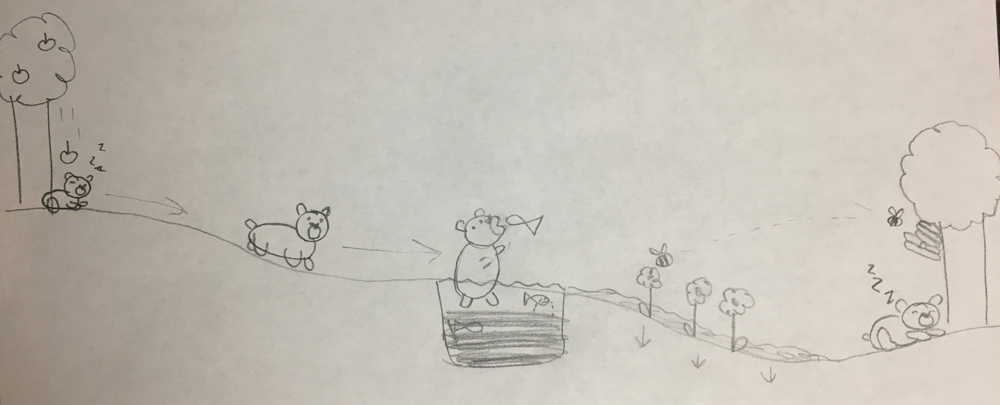

An apple falls from a tree and lands on the sleeping bear below. When it hits the bear, the bear wakes up and begins to walk down the hill. He stops when he gets to the river at the bottom of the hill. Seeing the river reminds him that he needs to eat dinner. He jumps in the water and startles the fish, which begin to jump out of the water to escape. He catches one in his mouth and eats it. He walks out of the river to the other side. Now focusing on the fish in the river, one fish begins to cry because their friend was eaten by the bear. This causes the river to overflow and fill the field below. The water soaks into the ground and flowers pop up. When the flowers pop up a bee flies over and pollinates them. The bee goes back to the hive and honey is made. The bear smells the freshly made honey and goes to the hive to eat it. He eats so much that he falls asleep right there under the tree.
